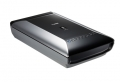

器材库 > 平板扫描仪 > CanoScan 9000F MarkII

详细规格
发布日期
2013-01-16
厂家推荐价格
2,880.00 （人民币）
可支持的胶片格式
35mm底片, 35mm幻灯片, 120格式底片
扫描元件
12线彩色CCD
光源
白光LED
光学分辨率
9600 x 9600dpi(底片), 4800 x 4800dpi(文档反射式)dpi
扫描位深
灰度：48位输入（每种颜色16位）, 16位（底片扫描）或8位输出；彩色：48位输入（每种颜色16位）, 48位或24位输出（每种颜色16位或8位）
扫描速度
彩色A4 300dpi：约7秒；彩色,灰度,黑白底片：1.5～48.4 毫秒/线
有效扫描区域
35mm底片：24×36mm；120格式底片：56×220mm
接口
USB2.0 高速
电源要求
AC电源适配器
尺寸
270×480×111mm
重量
4.6kg
铁凤凰2015-04-04 19:403.81 分
操作性 5.00功能性 3.50美观性 3.00趣味性 3.00耐用性 4.50性价比 4.50解像力 3.50色彩还原 3.50
产品图 / 样片
9000F MarkII